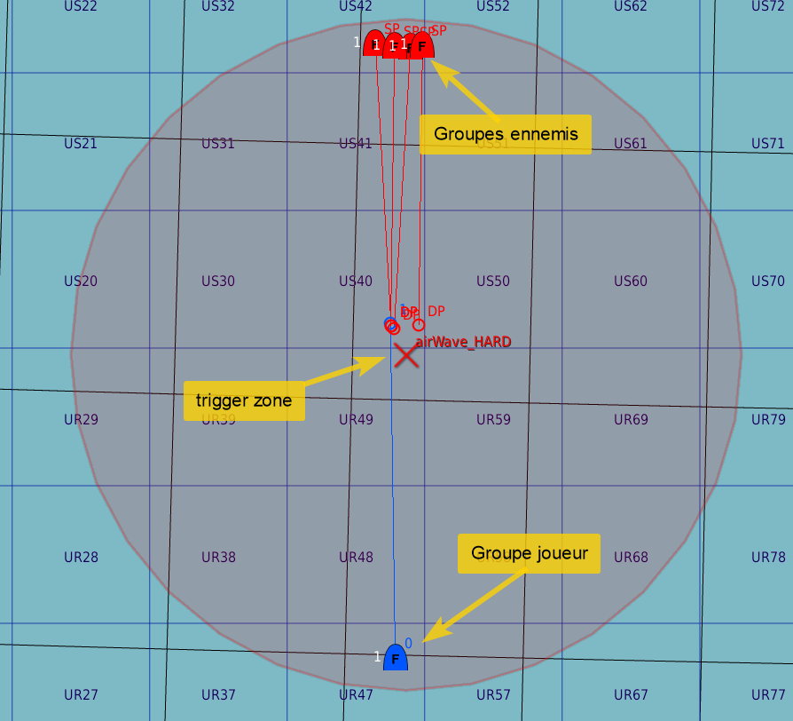
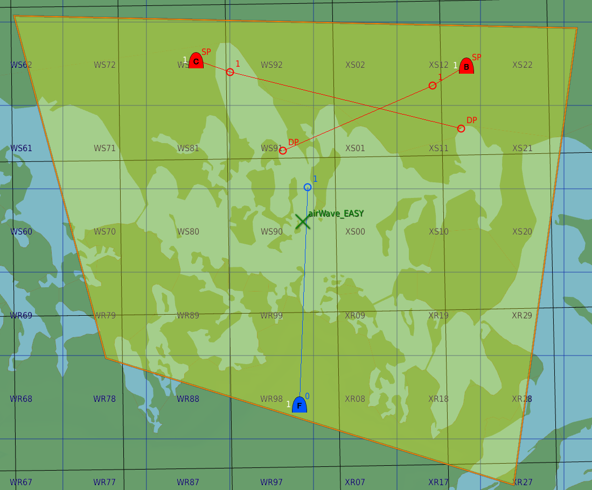
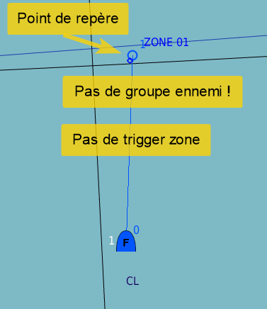

Module AirWaves¶
Navigation: Page dédiée aux créateurs de mission du site de documentation VEAF
🚧 TRAVAUX EN COURS 🚧
La documentation est en train d'être retravaillée, morceau par morceau. En attendant, vous pouvez consulter l'ancienne documentation.
Table des matières¶
Introduction¶
Le module AirWaves permet de créer facilement des zones d'entrainement, sur le modèle de la QRA (en tout cas pour ce qui est des paramètres), dans lesquelles les joueurs font face à des vagues d'ennemis IA successives qu'ils doivent vaincre les unes après les autres.
A la base, les zones AirWaves font apparaître des groupes aériens, mais il est tout à fait possible de faire aussi apparaître des unités au sol ou des navires. Le principe reste le même: vaincre toutes les vagues les unes après les autres.
En cas d'échec (perte du combat contre les IA), la zone est remise à zéro et les groupes IA restants sont détruits. De cette manière, tout est prêt pour le joueur suivant.
Principes¶
Une zone AirWaves est constituée de :
- une zone, qui peut être définie par :
- une trigger zone DCS placée dans l'éditeur de mission (circulaire ou quadpoint)
- une zone circulaire avec un centre (défini par des coordonnées en longitude/latitude ou MGRS) et un rayon (en mètres)
- une ou des vagues d'IA composées de :
- un ou des groupes d'IA :
- placés dans l'éditeur de DCS, en activation retardée
- définis par des commandes VEAF, qui se déclenchent au moment du déploiement de la vague
- des paramètres
Exemple 1 - zone définie par une trigger zone circulaire, avec des groupes DCS¶

Exemple 2 - zone définie par une trigger zone de type quadrilatère, avec des groupes DCS¶

Exemple 3 - zone définie dans le code (coordonnées, rayon, commandes VEAF)¶

La zone a un état qui correspond à son activité :
- tout d'abord elle est prête, et attend qu'on y pénètre ou qu'on y prenne un slot
- plus elle déploie la première vague, et devient active pendant toute la durée de leur vol
- ensuite, si cette vague est détruite ou déroutée, la zone déploie la vague suivante
- si toutes les vagues sont épuisées, la zone est marquée comme gagnée et est réinitialisée dès que les joueurs l'ayant déclenchée ont disparu.
- si les joueurs sont tous détruits, la zone est marquée comme perdue et est réinitialisée
Ceci est le schéma standard. En pratique, des dizaines d'options (décrites plus loin) vous permettent d'adapter le comportement des zones AirWaves comme vous le souhaitez.
Comment configurer une zone AirWaves¶
Tout commence dans le fichier de configuration de la mission missionConfig.lua, qui est situé dans le répertoire src/scripts de votre mission.
Ce dernier est un fragment de code source LUA qui permet de choisir la manière dont les scripts VEAF sont activés et configurés. Nous vous conseillons d'utiliser Notepad++ ou Visual Studio Code pour l'éditer.
Par défaut, si vous avez utilisé le convertisseur de mission existante pour préparer votre dossier de mission VEAF, il contient déjà un modèle de configuration QRA que vous pourrez trouver en cherchant -- initialize AirWaves zones.
Le principe de configuration est simple.
Tout d'abord on crée un "objet" de type AirWaveZone en appelant AirWaveZone:new(). Cet appel renvoie une instance de AirWaveZone, qu'on peut stocker dans une variable (local maZone = AirWaveZone:new()) ou utiliser tout de suite avec une désignation chaînée (en enchainant les appels aux méthodes de configuration qui renvoient toutes, tour à tour, la même instance de AirWaveZone).
Exemple de chainage¶
AirWaveZone:new()
:setName("Minevody")
:setTriggerZone("Minevody")
Exemple d'utilisation d'une variable¶
local zoneMinevody = AirWaveZone:new()
zoneMinevody:setName("Minevody")
zoneMinevody:setTriggerZone("Minevody")
L'avantage de cette méthode est sa simplicité.
L'avantage de la seconde méthode est qu'on peut, plus loin dans le fichier missionConfig.lua, utiliser une référence à la variable qu'on a définie pour accéder à l'instance de AirWaveZone (par exemple, dans la définition d'un alias, d'une commande "mission maker", ou dans un menu radio).
Structure d'une déclaration de zone AirWaves¶
Création de la zone¶
Création d'une nouvelle instance de AirWaveZone: une instance définit une zone et son comportement; exemple: la zone de Minevody.
Utiliser soit une variable locale, soit une désignation chaînée (voir ce chapitre) pour exploiter cette instance.
AirWaveZone.new()
Paramètres obligatoires¶
Définition du nom technique de la QRA: ce nom sert à retrouver la QRA avec la commande veafQraManager.get(); exemple: veafQraManager.get("QRA_Minevody")
:setName("Minevody")
Description de la zone: c'est ce qui sera repris dans les différents messages
:setDescription("Zone 01 - FOX1 fighters")
Définition de la zone via une trigger zone DCS
On peut choisir de définir la zone à partir d'une trigger zone, ou avec un centre et un rayon (voir plus bas); c'est l'un ou l'autre.
:setTriggerZone("airWave_HARD")
Utilisation de coordonnées (MGRS ou Latitude/Longitude) et d'un rayon pour définir la zone.
On peut choisir de définir la zone avec un centre et un rayon, ou à partir d'une trigger zone (voir plus haut); c'est l'un ou l'autre.
:setZoneCenterFromCoordinates("U37TCL5297") -- U=UTM (MGRS); 37T=grid number; CL=square; 52000=latitude; 97000=longitude
:setZoneRadius(50000) -- Définit le rayon de la zone (en mètres)
Définition de la coalition qui gère la QRA (en général, ce sont les ennemis des joueurs, souvent les rouges).
Valeurs acceptées:
- "red"
- "blue"
- coalition.side.RED
- coalition.side.BLUE
- coalition.side.NEUTRAL
:setCoalition("red") -- Définit la coalition à laquelle la QRA appartiendra
Les joueurs qui font partie de cette ou ces coalitions seront surveillés, et la zone sera déclenchée uniquement pour eux.
On accepte les mêmes valeurs que pour setCoalition()
:addPlayerCoalition(coalition.side.BLUE)
Paramètres optionnels¶
Définition d'un plancher et d'un plafond (en pieds); les joueurs qui pénètrent dans la zone ne sont pas détectés s'ils sont au dessus du plafond ou en dessous du plancher (càd que la zone ne se déclenche pas).
Par défaut, pas de plancher ni de plafond
:setMaximumAltitudeInFeet(40000) -- hard ceiling
:setMinimumAltitudeInFeet(1500) -- hard floor
Dessin de la zone sur la carte F10; par défaut, pas de dessin.
:setDrawZone(true)
Gestion des vagues¶
A la base, le but de ce script est d'opposer à la présence de joueurs des vagues d'avions IA qui viennent les affronter.
Il est possible d'utiliser des groupes d'avions placés dans l'éditeur de DCS (en late activation), ou des commandes VEAF (voir la documentation des scripts - wip ou la documentation de la mission Opentraining
Le fait qu'on puisse utiliser des commandes VEAF fait qu'on peut opposer aux joueurs toutes sortes d'ennemis (SAM, manpads, unités blindées, convois, navires); on peut aller jusqu'à détourner l'usage classique de ce script pour déclencher des actions (une combat zone, la mise en déplacement d'un porte-avion).
Réinitialisation¶
On peut utiliser la commande :resetWaves() pour réinitialiser les vagues d'une zone (les supprimer toutes). C'est utile dans le cas où on copie une zone à partir d'une autre existante, et qu'on veut changer complètement les vagues (et non pas juste en ajouter).
Exemple de copie¶
mist.utils.deepCopy(veafAirWaves.get("Zone 01 - EASY CAP"))
:setName("Zone 03 - HARD CAP")
:setDescription("Zone 03 - HARD VEAF CAP")
:setZoneCenterFromCoordinates("U37TCH2163")
:resetWaves()
:addWave( { groups = { "[0, 0]-cap hard x1, hdg 180, dist 30" }, number = 1) -- a single fighter spawning near
:addWave( { groups = { "[0, -30000]-cap hard x2, hdg 180, dist 50" }, number = 1) -- a pair of fighters spawning a bit further away
:addWave( { groups = { "[0, -60000]-cap hard x2, size 2, hdg 180, dist 50" }, number = 1) -- two flights of fighters spawning further again
:start()
Paramètres¶
Choix de la position du spawn par défaut, relativement au centre de la zone (en mètres, positif vers l'Est et le Sud, négatif vers l'Ouest et le Nord).
Cette position est utilisée quand on ne peut pas déterminer la position de départ du groupe (ça arrive parfois avec DCS, de manière inexpliquée), ou quand le groupe est en fait une commande VEAF et qu'on n'a pas précisé de position dans la commande.
:setRespawnDefaultOffset(0, -45000) -- 45km north of the zone's center
Choix du rayon de spawn; on peut préciser un cercle (en mètres) autour du point de spawn, dans lequel on choisira aléatoirement le point de spawn de chaque groupe (ou commande).
Ce paramètre est appliqué en plus de la position de spawn déterminée par le groupe (dans l'éditeur DCS), par le décalage par défaut (setRespawnDefaultOffset), ou par les coordonnées dans la commande.
:setRespawnRadius(10000)
Exemple¶
AirWaveZone:new()
:setName("Minevody")
:setTriggerZone("Minevody")
:setRespawnDefaultOffset(0, -45000) -- 45km north of the zone's center
:setRespawnRadius(10000)
:addWave({ groups = {"[0, 30000]-cap mig29-fox1", "zone1_su27", "-sa15"} })
Dans ce cas, le groupe [0, 30000]-cap mig29-fox1 (une commande VEAF) a des coordonnées (décalage à partir du centre de la zone) spécifiées dans la définition de la commande VEAF (entre crochets).
Il va donc apparaître à 30km au sud du centre de la zone, qui correspond à la trigger zone Minevody.
Mais on ajoute un respawn radius de 10km, ce qui fait qu'en pratique il apparaîtra à une position aléatoire dans un cercle de 10km autour de ce point.
Le groupe zone1_su27 (un groupe DCS) n'a pas de coordonnées. Si DCS fonctionne correctement, il va apparaître à l'emplacement où il a été placé dans l'éditeur.
Mais ici aussi on doit tenir compte du respawn radius: il apparaîtra à une position aléatoire dans un cercle de 10km autour de ce point.
Le dernier groupe -sa15 (lui aussi une commande VEAF) n'a pas de coordonnées intrinsèques. Il va donc apparaître à l'emplacement par défaut, qui est précisé par la commande setRespawnDefaultOffset par rapport au centre de la zone (ici, 45km au nord).
Et bien sûr on appliquera le respawn radius: il apparaîtra à une position aléatoire dans un cercle de 10km autour de ce point.
Vague simple¶
La manière la plus simple de définir une vague composée d'un seul groupe ou d'une seule commande VEAF est d'utiliser la commande :addWave avec un seul paramètre:
:addWave("groupe 1")
Cela équivaut à :
:addWave({ groups = {"groupe 1" }})
Définition d'une vague¶
La définition d'une vague, qu'elle soit composée de groupes DCS, de commandes VEAF ou des deux, se fait en choisissant aléatoirement un nombre déterminé de groupes/commandes dans une liste, en appliquant un biais optionnel.
Tout d'abord, il faut définir une liste de groupes et/ou de commandes VEAF. En lua, les listes sont encadrées par des accolades {}, et les chaines de caractères par des guillemets "".
On utilisera la méthode :addWave().
Cette méthode est très flexible, ce qui permet de l'utiliser très simplement (si on n'a qu'un groupe/une commande à mettre dans une vague, et pas de paramètre particulier, avec :addWave("groupe1")), ou d'en exploiter toutes les fonctionnalités.
On peut l'appeler avec une simple chaine de caractères, ou plusieurs; ce seront nos groupes ou nos commandes.
:addWave("group1", "group2")
Si on veut utiliser plus de paramètres, on peut l'appeler avec une table complexe qui peut contenir ces champs:
- groups (obligatoire) : la liste des groups et/ou commandes VEAF
- number (par défaut 1) : le nombre de groupes/commandes à spawner pour cette vague ; ça peut être une valeur aléatoire : on donne la limite basse et la limite haute (comme ici
"2-4"pour "entre 2 et 4") - attention à bien mettre les guillemets ! - bias (par défaut 0) : le biais (voir plus bas) ; ça peut aussi être une valeur aléatoire
- delay (par défaut rien) : le délai entre cette vague et la suivante ; ça peut aussi être une valeur aléatoire ; la valeur par défaut est définie au niveau de la zone avec
::setDelayBetweenWaves()
groups peut être une simple chaine de caractères (s'il n'y a qu'un groupe/une commande) ou une table.
Exemple où on définit 4 groupes dont 2 commandes VEAF et 2 groupes DCS, et où on en spawn 2¶
:addWave({ groups = {"groupe 1", "-sa15", "groupe 2", "[10000, 15000]-cap mig29, size 2, hdg 180"}, number = 2 })
Exemple avec un seul groupe qui sera spawné entre 1 et 3 fois, et un délai¶
:addWave({ groups = "groupe 1", number = "1-3", delay = 60 })
Attention, il est tout à fait possible que les groupes qu'on fait apparaître soient dupliqués (par exemple, 2 fois "groupe 1" dans notre exemple)
Au moment du déploiement, on va aléatoirement choisir un nombre entre 1 (+ le biais) et la taille de la liste (+ le biais), et on va prendre l'élément correspondant dans la liste (ou le dernier si le choix est trop grand) pour le spawner; et ce autant de fois qu'il le faut (2, dans notre exemple).
Le biais¶
Le biais permet donc de décaler vers la droite de la liste le choix aléatoire.
Exemple sans biais¶
:addWave({ groups = {"groupe 1", "groupe 2", "groupe 3", "groupe 4"}, number = 1 })
Exemple avec biais¶
:addWave({ groups = {"groupe 1", "groupe 2", "groupe 3", "groupe 4"}, number = 1, bias = 1 })
Exemple complet¶
AirWaveZone:new()
:setName("Minevody")
:setTriggerZone("Minevody")
:setRespawnDefaultOffset(0, -45000) -- 45km north of the zone's center
:setRespawnRadius(10000)
:addWave({ groups = {"-cap mig29-fox1", "-cap su27-fox1", "-cap su33-fox3"}, number = 2, bias = -1 }) -- choose between group 1 and group 2, never pick group 3
:addWave({ groups = {"-cap mig29-fox1", "-cap su27-fox1", "-cap su33-fox3"}, number = 2, bias = 0 }) -- choose between group 1, group 2 and group 3
:addWave({ groups = {"-cap mig29-fox1", "-cap su27-fox1", "-cap su33-fox3"}, number = 2, bias = 1 }) -- choose between group 2 and group 3, never pick group 1
Avec la même ligne ou presque, on définit trois vagues très différentes !
Délai entre vagues¶
Le délai permet de temporiser le déclenchement de la vague suivante (valeur positive), ou au contraire de la déclencher immédiatement (valeur négative).
Exemple avec délai¶
:addWave({ groups = {"groupe 1", "groupe 2"}, number = 1, delay = 120 })
:addWave({ groups = {"groupe 3", "groupe 4"}, number = 1 })
Autre Exemple¶
AirWaveZone:new()
:setName("Minevody")
:setTriggerZone("Minevody")
:setRespawnDefaultOffset(0, -45000) -- 45km north of the zone's center
:setRespawnRadius(10000)
:setDelayBetweenWaves(60) -- 1 minute
:addWave({ groups = { "[0, 0]-cap fox2.*x1, hdg 180, dist 20" }, number = 1 }) -- a single fighter spawning near
:addWave({ groups = { "[-80000, -20000]-cap fox2.*x1, hdg 180, dist 20" }, number = 1, delay = -1 }) -- a single fighter spawning a bit further north and to the west
:addWave({ groups = { "[80000, -20000]-cap fox2.*x1, hdg 180, dist 20" }, number = 1 }) -- a single fighter spawning a bit further north and east AT THE SAME TIME
:addWave({ groups = { "[-80000, -20000]-cap fox2.*x2, hdg 180, dist 20" }, number = 1 }) -- a pair of fighters spawning a bit further north
La vague #1 est déployée normalement.
Le joueur la détruit, et le système déploie la vague #2 une minute plus tard, puis la vague #3 simultanément - la vague #4 n'est pas marquée "simultanée", donc on s'arrête à la vague #3.
Le joueur détruit toutes les cibles des deux vagues #2 et #3, et le système déploie la vague #4 une minute plus tard; c'est la dernière.
Utilisation de commandes¶
Un groupe dans une vague (dans la liste, entre les accolades) peut donc correspondre au nom d'un groupe d'avions de DCS, défini dans l'éditeur de mission, ou une commande VEAF.
Les commandes VEAF sont définies dans les différents scripts qui composent la bibliothèque VEAF, et peuvent avoir des effets très variés (déclencher une frappe d'artillerie, démarrer le déplacement d'un groupe naval - porte-avion -, lancer une combat zone, éclairer une zone, apparaître des blindés, des SAM, un convoi, un FARP, une FOB, ...).
Pour faire simple, tout ce que les scripts VEAF reconnaissent dans un marqueur sur la carte F10 peut être utilisé ici.
Le point d'apparition calculé (voir le paragraphe plus haut qui explique ce concept) sera en fait le point d'ancrage de la commande (ce sera comme si on avait mis un marqueur ici sur la vue F10). Si la commande n'est pas localisée (ex: déclenchement d'une combat zone) ou si elle contient des coordonnées absolues (ex U37TCL5297), ce point d'ancrage n'aura aucun effet.
Exemple, déclenchement d'une cap¶
:addWave("-cap mig29")
Exemple, déclenchement d'une cap avec offset par rapport au centre de la zone¶
:addWave("[-15000, 30000]-cap mig29, hdg 135, dist 40")
Exemple, création d'un SA15 au centre de la zone¶
:addWave("[0, 0]-sa15")
Exemple, création d'un convoi blindé qui se déplace du centre de la zone vers Kobuleti¶
:addWave("[0, 0]-convoy, armor 4, defense 2, dest kobuleti")
Exemple, appel d'une frappe d'artillerie antiaérienne¶
:addWave("-flak")
Exemple, appel d'une frappe d'artillerie sur coordonnées¶
:addWave("-shell#U37TGG2164791685")
Surveillance des unités¶
Les unités concernées par une zone Airwaves sont en permanence surveillées. En pratique, toutes les quelques secondes, on lance une vérification de l'état de la zone et des unités.
On vérifie l'état des unités IA spawnées dans le cadre de la zone :
- si elles sont toutes détruites (ou hors de combat, voir voir ici), on lance la vague suivante.
- si elles sortent de la zone pendant trop longtemps, on les détruit (despawn).
De même, pour les unités pilotées par des humains :
- si elles sont toutes détruites, la zone est perdue (et on la réinitialise)
- si elles sortent de la zone on les prévient; si ça dure trop longtemps, on commence à tirer un barrage de flak pour les endommager, et si ça dure vraiment trop longtemps (et qu'elles survivent), on les despawn.
On peut changer les messages (voir voir ici) et le délai avant destruction.
Exemple, on détruit les IA après 30 secondes en dehors de la zone¶
:setMaxSecondsOutsideOfZoneIA(30)
Exemple, on détruite les joueurs 60 secondes après leur sortie de la zone¶
:setMaxSecondsOutsideOfZonePlayers(60)
Options de personnalisation¶
Messages et callbacks¶
Pour chaque zone, il est possible de choisir les messages émis par le système à chaque évènement, et même de spécifier une fonction qui sera appelée quand l'évènement surviendra.
Dans la mesure du possible, les messages sont envoyés aux groupes de joueurs concernés.
Les évènements sont:
- START : démarrage de la zone, au début de la mission (
:setMessageStart(),:setOnStart()) - WAIT_FOR_HUMANS : le premier joueur est dans la zone, on attend un certain temps les autres (
:setMessageWaitForHumans(),:setOnWaitForHumans()) - WAIT_TO_DEPLOY : on attend un certain temps avant de déployer une vague (
:setMessageWaitToDeploy(),:setOnWaitToDeploy()) - DEPLOY : déploiement d'une vague (
:setMessageDeploy(),setMessageDeployPlayers(),:setOnDeploy()) - DESTROYED : une vague a été détruite (
:setMessageDestroyed(),:setOnDestroyed()) - WON : la zone a été gagnée, plus de vagues IA (
:setMessageWon(),:setOnWon()) - LOST : la zone a été perdue, plus de joueurs (
:setMessageLost(),:setOnLost()) - STOP : arrêt de la zone, si
:stop()est appelée (:setMessageStop(),:setOnStop()) - OUTSIDE_OF_ZONE : un joueur est sorti de la zone, on le prévient avant de le détruire (
:setMessageOutsideOfZone(),:setOnOutsideOfZone())
Exemples¶
-- message when the zone is activated
zone:setMessageStart("%s est active")
-- event when the zone is activated
zone:setOnStart(eventExporter.onStart)
-- message when the zone is waiting for more players
zone:setMessageWaitForHumans("%s: attente d'autres joueurs pendant %s secondes")
-- event when the zone is waiting for more players
zone:setOnWaitForHumans(eventExporter.onWaitForHumans)
-- message when a wave will be triggered
zone:setMessageWaitToDeploy("%s: déploiement de la prochaine vague dans %s secondes")
-- event when a wave will be triggered
zone:setOnWaitToDeploy(eventExporter.onWaitToDeploy)
-- message when a wave is triggered
zone:setMessageDeploy("%s déploie la vague numéro %s")
-- message to players when a wave is triggered
zone:setMessageDeployPlayers("Vague numéro %s déployée, %s") -- the second parameter is a BRA or "MERGED"
-- event when a wave is triggered
zone:setOnDeploy(eventExporter.onDeploy)
-- message when a wave is destroyed
zone:setMessageDestroyed("%s: la vague %s a été détruite")
-- event when a wave is destroyed
zone:setOnDestroyed(eventExporter.onDestroyed)
-- message when all waves are finished (won)
zone:setMessageWon("%s: c'est gagné (plus d'ennemi) !")
-- event when all waves are finished (won)
zone:setOnWon(eventExporter.onWon)
-- message when all players are dead (lost)
zone:setMessageLost("%s: c'est perdu (joueur mort ou sorti) !")
-- event when all players are dead (lost)
zone:setOnLost(eventExporter.onLost)
-- message when the zone is deactivated
zone:setMessageStop("%s n'est plus active")
-- event when the zone is deactivated
zone:setOnStop(eventExporter.onStop)
-- message when a player is outside of zone
zone:setMessageOutsideOfZone("%s - vous êtes en dehors de la zone depuis %s secondes; retournez-y, ou vous serez détruit après %s secondes.")
-- event when a player is outside of zone
zone:setOnOutsideOfZone(eventExporter.onOutsideOfZone)
Détermination de l'état des groupes et vagues¶
Il est possible de paramétrer AirWaves pour que le module appelle vos propres fonctions au moment où il se demande si une vague ou un group est encore opérationnel.
Pour cela, deux méthodes existent.
---the function that decides if a wave is dead or not (as a set of groups and units)
zone:setIsEnemyWaveDeadCallback(callback)
La fonction que vous spécifierez en paramètre sera appelée pour déterminer si une vague est considérée comme détruite ou non. Elle prend trois paramètres:
- la zone (l'objet)
- le numéro de la vague courante
- la liste des groupes qui ont été spawnés (leurs noms)
Et elle doit renvoyer true si la vague doit être considérée comme hors de combat.
---the function that decides if a group is dead or not (individually)
zone:setIsEnemyGroupDeadCallback(callback)
La fonction que vous spécifierez en paramètre sera appelée pour déterminer si un groupe est considéré comme hors de combat ou non. Elle prend trois paramètres:
- la zone (l'objet)
- le numéro de la vague courante
- un groupe DCS qui a été spawné (une table DCS)
Et elle doit renvoyer true si le groupe doit être considéré comme détruit.
Par défaut (si on n'a pas spécifié de callbacks particuliers), on vérifie tous les groupes d'une vague (ce comportement est surchargé par :setIsEnemyWaveDeadCallback()), et pour chaque groupe on regarde le pourcentage de points de vie de chacune de ses unités (ce comportement est surchargé par :setIsEnemyGroupDeadCallback()).
S'il est inférieur à une certaine valeur (qu'on peut régler avec :setMinimumLifeForAiInPercent(), par défaut 10%), on détruit l'unité en la despawnant (ce comportement est surchargé par :setHandleCrippledEnemyUnitCallback()).
Gestion des unités considérées comme hors-de-combat¶
La méthode par défaut (que vous pouvez remplacer avec :setIsEnemyGroupDeadCallback()) pour vérifier l'état d'un groupe dans une vague compare son niveau de vie avec un minimum vital qui est déclaré comme une constante (veafAirWaves.MINIMUM_LIFE_FOR_AI_IN_PERCENT = 10).
Quand elle détermine qu'une unité doit être détruite, elle appelle une fonction qui se charge de retirer l'unité du groupe. Par défaut, cette fonction déspawn simplement l'unité.
Vous pouvez la remplacer par une de vos fonctions qui fera ce que vous voulez avec cette unité (la faire exploser, c'est joli), en utilisant la fonction suivante:
--- the function that handles crippled enemy units
zone:setHandleCrippledEnemyUnitCallback(callback)
Elle prend trois paramètres:
- la zone (l'objet)
- le numéro de la vague courante
- une unité DCS qui a été spawné (une table DCS)
Dernière étape¶
Une fois configurée, la zone doit être lancée.
Selon le choix qu'on a fait (variable locale ou désignation chaînée), on appelle la méthode :start().
Exemple, désignation chaînée¶
AirWaveZone:new()
:setName("Minevody")
:setTriggerZone("Minevody")
:start()
Exemple, variable locale¶
local zone = AirWaveZone:new()
zone:setName("Minevody")
zone:setTriggerZone("Minevody")
zone:start()
Si vous souhaitez démarrer la zone dans un trigger, vous pouvez utiliser la méthode get() du module pour retrouver l'instance correspondante.
veafAirWaves.get("Minevody"):start()
Bien sûr, il est aussi possible d'appeler d'autres méthodes, telles que stop()
veafAirWaves.get("Minevody"):stop()
Exemples complets¶
Voici un exemple de configuration fonctionnel et complet (toutes les fonctions disponibles sont présentes)
-- example zone 01 (can easily be copy/pasted, nothing to set in the editor except player slots and if desired trigger zones)
AirWaveZone:new()
-- technical name (AirWave instance name)
:setName("Zone 01")
-- description for the messages
:setDescription("Zone 01")
-- coalitions of the players (only human units from these coalitions will be monitored)
:addPlayerCoalition(coalition.side.BLUE)
-- trigger zone name (if set, we'll use a DCS trigger zone)
--:setTriggerZone("airWave_HARD")
-- center (point in the center of the circle, when not using a DCS trigger zone) - can be set with coordinates either in LL or MGRS
:setZoneCenterFromCoordinates("U37TFH2882") -- U=UTM (MGRS); 37T=grid number; CL=square; 52000=latitude; 97000=longitude
-- radius (size of the circle, when not using a zone) - in meters
:setZoneRadius(90000) -- 50 nm
-- draw the zone on screen
:setDrawZone(true)
-- default position for respawns (im meters, lat/lon, relative to the zone center)
:setRespawnDefaultOffset(0, 0)
-- radius of the waves groups spawn
:setRespawnRadius(0)
-- delay in seconds between the first human in zone and the actual activation of the zone
:setDelayBeforeActivation(15)
-- default delay in seconds between waves of enemy planes
--:setDelayBetweenWaves(60)
---adds a wave of enemy planes
---parameters are very flexible: they can be:
--- a table containing the following fields:
--- - groups a list of groups or VEAF commands; VEAF commands can be prefixed with [lat, lon], specifying the location of their spawn relative to the center of the zone; default value is set with "setRespawnDefaultOffset"
--- - number how many of these groups will actually be spawned (can be multiple times the same group!); it can be a "randomizable number", e.g., "2-6" for "between 2 and 6"
--- - bias shifts the random generator to the right of the list; it can be a "randomizable number" too
--- - delay the delay between this wave and the next one - if negative, then the next wave is spawned instantaneously (no waiting for this wave to be completed); it can be a "randomizable number" too
--- or a list of strings (the groups or VEAF commands)
--- or almost anything in between; we'll take a string as if it were a table containing one string, anywhere
--- examples:
--- :addWave("group1")
--- :addWave("group1", "group2")
--- :addWave({"group1", "group2"})
--- :addWave({ groups={"group1", "group2"}, number = 2})
--- :addWave({ groups="group1", number = 2})
:addWave({ groups = "-cap easy x1, hdg 180, dist 30", delay = -1 }) -- an easy single fighter cap
:addWave({ groups = "-sa9, hdg 180, dist 30", number = "1-3", delay = "15-30" }) -- and simultaneously, between 1 and 3 SA9 groups
:addWave({ groups = "-cap normal x1, hdg 180, dist 30" , number = "1-2", delay = -1 }) -- a normal single or two-ship fighter cap after 15-30 seconds
:addWave({ groups = "-sa8, hdg 180, dist 30", number = "1-3", delay = "15-30" }) -- and simultaneously, between 1 and 3 SA8 groups
:addWave({ groups = "-cap hard x1, hdg 180, dist 30" , number = "2-3", delay = -1 }) -- a hard 2 to 3 fighters cap after 15-30 seconds
:addWave({ groups = "-sa15, hdg 180, dist 30", number = "1-3" }) -- and simultaneously, between 1 and 3 SA15 groups
-- players in the zone will only be detected above this altitude (in feet)
:setMaximumAltitudeInFeet(40000) -- hard ceiling
-- players in the zone will only be detected below this altitude (in feet)
:setMinimumAltitudeInFeet(1500) -- hard floor
-- message when the zone is activated
:setMessageStart("%s est maintenant fonctionnelle")
-- event when the zone is activated
--:setOnStart(callbackFunction)
-- message when the zone is waiting for more players
:setMessageWaitForHumans("%s: attente d'autres joueurs pendant %s secondes")
-- event when the zone is waiting for more players
--:setOnWaitForHumans(callbackFunction)
-- message when a wave will be triggered
:setMessageWaitToDeploy("%s: déploiement de la prochaine vague dans %s secondes")
-- event when a wave will be triggered
--:setOnWaitToDeploy(callbackFunction)
-- message when a wave is triggered
:setMessageDeploy("%s déploie la vague numéro %s")
-- event when a wave is triggered
:setOnDeploy(function ()
trigger.action.setUserFlag("monBeauDrapeau", 1)
end)
-- message when a wave is destroyed
:setMessageDestroyed("%s: la vague %s a été détruite")
-- event when a wave is destroyed
--:setOnDestroy(callbackFunction)
-- message when all waves are finished (won)
:setMessageWon("%s: c'est gagné (plus d'ennemi) !")
-- event when all waves are finished (won)
--:setOnWon(callbackFunction)
-- message when all players are dead (lost)
:setMessageLost("%s: c'est perdu (joueur mort ou sorti) !")
-- event when all players are dead (lost)
--:setOnLost(callbackFunction)
-- message when the zone is deactivated
:setMessageStop("%s n'est plus active")
-- event when the zone is deactivated
--:setOnStop(callbackFunction)
-- the function that handles crippled enemy units
:setHandleCrippledEnemyUnitCallback(handleCrippledEnemyUnit)
:setMinimumLifeForAiInPercent(50)
---the function that decides if a group is dead or not (individually)
--:setIsEnemyGroupDeadCallback(isEnemyGroupDead)
-- start the zone
:start()
Voici un autre exemple, qui recopie une zone existante (mist.utils.deepCopy) au lieu de l'initialiser avec new() et qui reconfigure les points de la copie qui seront différents (pratique pour faire plusieurs zones similaires):
mist.utils.deepCopy(veafAirWaves.get("Zone 01"))
:setName("Zone 03")
:setDescription("Zone 03 - FOX1 fighters")
:setZoneCenterFromCoordinates("U37TCH2163")
:start()
Contacts¶
Si vous avez besoin d'aide, ou si vous voulez suggérer quelque chose, vous pouvez :
- contacter Zip sur GitHub ou sur Discord
- aller consulter le site de la VEAF
- poster sur le forum de la VEAF
- rejoindre le Discord de la VEAF